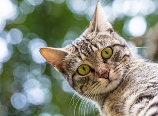

Bem-vindo ao Adote Fácil
Nosso objetivo é conectar animais resgatados a pessoas dispostas a oferecer um lar seguro, responsável e cheio de carinho.
Através da divulgação de cães e gatos disponíveis para adoção, buscamos incentivar a adoção responsável e contribuir para a redução do abandono animal.
Conheça nossos animais e faça parte dessa causa.

Animais para adoção
Conheça cães e gatos que estão aguardando uma família e uma nova oportunidade de vida.

Adoção Responsável
Adotar um animal é um compromisso de longo prazo que envolve cuidado, carinho, alimentação adequada e acompanhamento veterinário.
Antes de adotar, é importante avaliar se você possui tempo, espaço e condições para oferecer uma vida saudável e feliz ao animal.
A adoção responsável ajuda a reduzir o abandono e proporciona uma nova oportunidade para cães e gatos resgatados.
Como Ajudar
Existem diversas formas de contribuir para a proteção animal, mesmo sem realizar uma adoção.
Você pode divulgar animais disponíveis para adoção, incentivar a posse responsável, participar de ações voluntárias ou colaborar com doações de ração e materiais necessários para os cuidados dos animais.
Pequenas atitudes fazem grande diferença na vida dos animais que aguardam uma nova oportunidade.